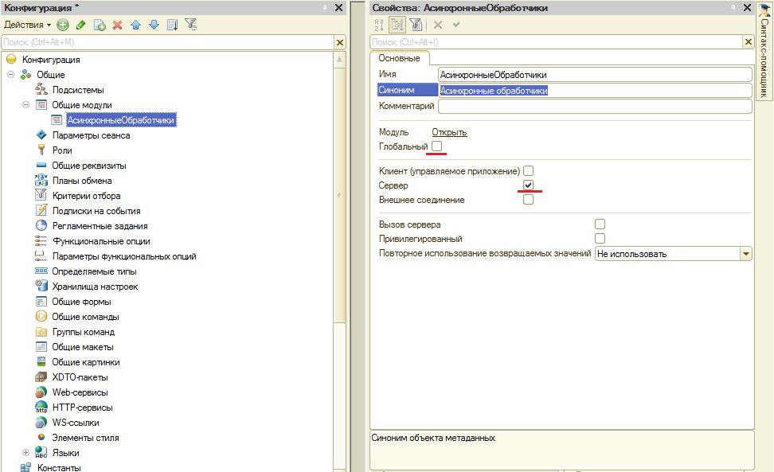
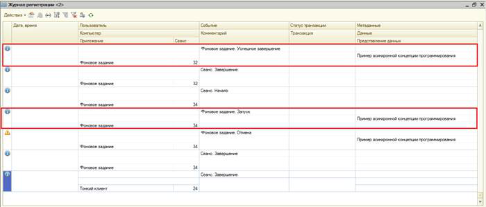

Концепция асинхронного программирования
Асинхронная концепция программирования заключается в том, что результат выполнения функции доступен не сразу же, а через некоторое время в виде некоторого асинхронного (нарушающего обычный порядок выполнения) вызова.
Т.е. главная идея асинхронного программирования заключается в том, чтобы запускать отдельные вызовы методов и параллельно продолжать выполнять другую работу без ожидания окончания вызовов.
Некоторые методы, вероятность исключений которых сведена к минимуму, не нуждаются в асинхронном подходе, но другие - требуют его в самом начале разработки.
Как видно из графиков, коэффициент полезных интерактивных действий пользователя при синхронной модели программирования отсутствует, так как система блокирует пользовательский интерфейс, в то время как при асинхронной модели, пользователь продолжает активную работу в системе.
При синхронном выполнении у приложения есть только один поток. С помощью асинхронной модели программирования вы можете запускать множество параллельных потоков и во время их выполнения реагировать на новые действия пользователя. После того как n-поток выполнен, вы отображаете результат на экран.
Фоновые задания в «1С:Предприятие 8»
В «1С:Предприятие 8» фоновые задания предназначены для выполнения прикладных задач асинхронно. Они могут порождать дочерние фоновые задания, например, для распараллеливания сложных вычислений по различным рабочим серверам кластера в клиент-серверном варианте работы.
Существует возможность ограничить выполнение фоновых заданий, имеющих одинаковые методы, по определенному прикладному признаку. Программное создание и управление фоновыми заданиями возможно из любого соединения пользователя с информационной базой системы. Фоновое задание выполняется от имени пользователя, который его создал.
Механизм заданий функционирует как в клиент-серверном, так и в файловом варианте работы, но возможности по администрированию и выполнению заданий в обоих вариантах несколько различаются.
Клиент-серверный вариант
В клиент-серверном варианте планированием выполнения заданий занимается планировщик заданий, который физически располагается в менеджере кластера.
Планировщик периодически проверяет, не поступили ли запросы на выполнение фоновых заданий. Если есть задания, которые нужно выполнить, планировщик определяет наименее загруженные рабочие процессы кластера и последовательно назначает каждому из них свое задание на выполнение. Таким образом, один и тот же рабочий процесс потенциально может выполнять несколько заданий параллельно. После того как задание получено рабочим процессом, рабочий процесс устанавливает соединение с информационной базой и выполняет задание в рамках этого соединения. После выполнения задания рабочий процесс уведомляет планировщика об успешном или неуспешном выполнении задания.
Файловый вариант
Начиная с версии 8.3.3.641 платформы, разработчики значительно упростили работу с фоновыми заданиями в файловом варианте.
Раньше для автоматического выполнения заданий требовалось запускать отдельный, дополнительный сеанс «1С:Предприятия», используемый в качестве планировщика заданий. И в этом сеансе нужно было периодически выполнять метод встроенного языка ВыполнитьОбработкуЗаданий(). Такой подход был довольно громоздким, неудобным и сильно ограничивал использование фоновых и регламентных заданий в файловом варианте работы.
Теперь всё стало гораздо проще. Если стартует тонкий или толстый клиент, а также если у веб-сервера есть клиентские соединения, то в каждом из этих приложений автоматически запускается еще один поток с подключением к базе данных. Эти потоки занимаются тем, что выполняют фоновые и регламентные задания.
Каждое из перечисленных приложений выполняет собственные фоновые задания. Если приложение инициировало несколько фоновых заданий, то выполняются они последовательно, в порядке поступления.
Очевидный минус 1С фоновых заданий: поскольку они выполняются на стороне сервера, то нет возможности интерактивной работы с пользователем (к примеру, нельзя вывести сообщение или какую-нибудь другую информацию; все эти данные нужно сохранять в рамках информационной базы и дальше каким-то образом обрабатывать).
Необходимо отметить, что фоновые задания - это объекты исключительно программные и их нельзя сохранить в базе данных. То есть мы можем только создать экземпляр класса, инициализировать его свойства и запустить его на выполнение.
Пример асинхронного выполнения кода в «1С:Предприятие 8»
«Писать программы, в которых результат вызова функции приходит неизвестно когда - куда сложнее, чем обычные. Вложенные вызовы, обработка ошибок, контроль над происходящим - все усложняется», - так скажут только те, кто не умеет правильно пользоваться возможностями платформы, но не мы!
Продемонстрируем всю простоту и изящество асинхронного выполнения кода в «1С:Предприятие 8»!
Шаг 1. Создадим новую ИБ для разработки конфигурации
Шаг 2. В конфигурации добавим общий модуль «АсинхронныеОбработчики»
Почему мы добавили общий модуль? Тут все просто: для выполнения асинхронных операций в «1С:Предприяте 8» применяются фоновые задания, у которых имеется свой менеджер - «МенеджерФоновыхЗадания». У этого объекта есть метод «Выполнить», с помощью которого как раз и запускается фоновое задание.
Обратимся к синтакс-помощнику.
Таким образом, нам понадобится общий модуль.

Шаг 3. В общем модуле «АиснхронныеОбработчики» добавим экспортную процедуру НашаДлительнаяОперация()
Процедура НашаДлительнаяОперация(Длительность) Экспорт
// Имитация продолжительного действия (Длительность сек.).
ДатаНачалаОперации = ТекущаяДата();
Пока ТекущаяДата() - ДатаНачалаОперации < Длительность Цикл
КонецЦикла;
КонецПроцедуры
Шаг 4. Добавляем в конфигурацию обработку «АсинхроннаяКонцепцияПрограммирования» (можно создать внешнюю обработку)
На форму добавляем один реквизит:
- Длительность (Число)
и две команды
- ВыполнитьДлительнуюОперацию;
- ВыполнитьДлительнуюОперациюАсинхронно.
Шаг 5. Согласно синтакс-помощнику заполняем модуль формы
&НаКлиенте
Процедура ВыполнитьДлительнуюОперацию(Команда)
ВыполнитьДлительнуюОперациюНаСервере();
КонецПроцедуры
&НаСервере
Процедура ВыполнитьДлительнуюОперациюНаСервере()
АсинхронныеОбработчики.НашаДлительнаяОперация(Длительность);
КонецПроцедуры
&НаКлиенте
Процедура ВыполнитьДлительнуюОперациюАсинхронно(Команда)
ВыполнитьДлительнуюОперациюАсинхронноНаСервере();
КонецПроцедуры
&НаСервере
Процедура ВыполнитьДлительнуюОперациюАсинхронноНаСервере()
Параметры = Новый Массив;
Параметры.Добавить(Длительность);
ФоновыеЗадания.Выполнить("АсинхронныеОбработчики.НашаДлительнаяОперация",
Параметры, Новый УникальныйИдентификатор, "Пример асинхронной концепции программирования");
КонецПроцедуры
Шаг 6. Запускаем и проверяем!
Результат:
- если мы нажимаем на кнопку «Выполнить длительную операцию», то пользовательский интерфейс на «Длительность» секунд блокируется;
- если мы нажимаем на кнопку «Выполнить длительную операцию асинхронно», то пользовательский интерфейс не блокируется, а программный код выполняется параллельно.
В том, что программный код асинхронно выполняется, мы можем убедиться, просмотрев журнал регистрации.

Отладить программный код, который выполняется в «фоне» мы можем, если в параметрах отладки установим соответствующее свойство.
Пример асинхронного выполнения кода в «1С:Предприятие 8» с использование БСП
Пример реализации асинхронной концепции программирования в «1С:Предприятие 8» в БСП рассмотрим на примере обработки «Текущие дела».
Логика следующая: во время запуска программы инициализируется рабочая область начальной страницы, куда можно вывести форму обработки «Текущие дела». Эта форма заполняется текущими делами пользователя, а чтобы ее заполнить необходимо время. Если бы у разработчиков не было возможности асинхронно выполнять код, то на все время заполнения формы обработки пользовательский интерфейс был бы заблокирован!
Проанализируем программный код формы.
Событие формы «ПриСозданииНаСервере» вызывает процедуру «ЗапуститьФоновоеЗадание» - это то, что нам и нужно.
Не отвлекаясь на нюансы, анализируем данную процедуру
И здесь мы видим, что используется менеджер фоновых заданий и его метод «Выполнить». Отметить, что разработчики сохраняют уникальный идентификатор фонового задания.
И Что же дальше? А дальше нам необходимо отловить момент выполнения задания.
Для этого разработчики применяют метод ПодключитьОбработчикОжидания(<ИмяПроцедуры>, <Интервал>, <Однократно>).
В подключаемой процедуре Подключаемый_ПроверитьВыполнениеЗадания() разработчики вызывают функцию ЗаданиеВыполнено(ИдентификаторЗадания)

Данная функция по идентификатору проверяет выполнения фонового задания.
Необходимо отметить, что в БСП разработаны общие модули поддержки работы длительных серверных операций.
Таким образом, асинхронная концепция программирования в «1С:Предприятие 8» незначительно увеличивает трудоемкость решения задач для разработчика, но заметно улучшает функциональность программы с точки зрения пользователя.
Скриншоты
axiomlab0
axiomlab1
axiomlab2
axiomlab7